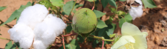

<app-header-title fxFlexFill  leftIconName="arrow_back" headerTitle="Crop Insights" rightIconName="volume_up">
</app-header-title>

<div class="crop-container">
  <h1>Corn</h1>
  <div class="break"></div>
  <h3>Planted: July 4 |</h3>
  <form class="planted-date-form">
    <mat-form-field class="example-full-width">
        <mat-label>Date Planted</mat-label>
        <input matInput placeholder="Last Date Planted" value="January 19">
    </mat-form-field>
  </form>
  <mat-chip-list class="mat-chip-lists">
    <mat-chip> 12 Days until harvest </mat-chip>
    <mat-chip> Stage: Germinating </mat-chip>
  </mat-chip-list>
  <div class="picture-card">
    <mat-card>
      
      <mat-card-content>Cotton Harvest</mat-card-content>
    </mat-card>
  </div>
  <div class="break"></div>
  <h4>TODAY'S ADVICE</h4>
  <div class="moisture-container">
    <div class="box">
      <mat-card class="moisture-card">
        <mat-card-content>SOIL MOISTURE</mat-card-content>
        <h1> 42% </h1>
      </mat-card>
      <div>
        <mat-card class="info-card">
          <mat-card-content>
            <p>Water Now <br> YES</p>
          </mat-card-content>
        </mat-card>
        <mat-card class="info-card">
          <mat-card-content>
            <p>Amount <br> 100 Units</p>
          </mat-card-content>
        </mat-card>
      </div>
      <mat-card class="image-card">
        
      </mat-card>
    </div>
  </div>
  <div class="button-infos">
    <h3>Last Reading: 00/00/00</h3>
    <button mat-flat-button color="primary" style="width:275px;" (click)="goToSensorPage()">MEASURE SOIL MOISTURE</button>
    <button mat-stroked-button style="width:275px; margin-top: 10px;" (click)="goToPastReadings()">SEE PAST READINGS</button>
  </div>
</div>
